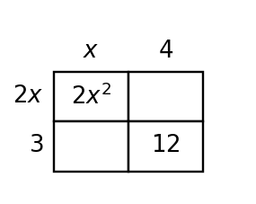
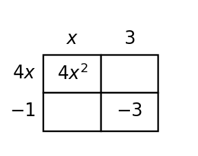
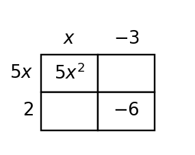
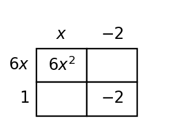
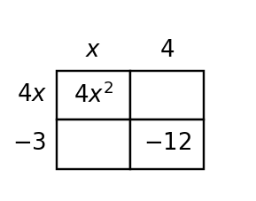

1Unit 5.1 | DOK 1
Rewrite $12x+18$ as a product by factoring out the greatest common factor.
GCF:
factored form:
Rewrite $12x+18$ as a product by factoring out the greatest common factor.
Factor $x^2+7x+12$ completely.
Identify the special pattern and factor $x^2+10x+25$.
For $y=(x-3)(x+5)$, identify the zeros and write the x-intercepts as ordered pairs.
Complete the missing areas in the model, then write the binomial product and the expanded expression represented by the total area.

Use the product-sum structure to factor $2x^2+7x+3$. Identify $ac$, the needed sum, the split middle term, and the final factors.
Use structure to explain why $(x+6)(x-6)$ has no $x$ term in expanded form. Then write the expanded expression.
Three equivalent forms of the same quadratic are shown. Identify which form is most useful for zeros, vertex, and y-intercept, and explain one choice.
| form | expression | feature most directly shown |
|---|---|---|
| standard | $y=x^2-4x-5$ | |
| factored | $y=(x-5)(x+1)$ | |
| vertex | $y=(x-2)^2-9$ |
A student says the zeros of $y=(x-4)(x+7)$ are $4$ and $7$ because those are the numbers in the factors. Critique the reasoning and write a corrected explanation.
Two students rewrite $x^2-4x-5$. Student A uses $(x-5)(x+1)$ to find zeros. Student B uses $(x-2)^2-9$ to find the vertex. Compare the methods and decide which form is more direct for each question.
Rewrite $15a^2+20a$ as a product by factoring out the greatest common factor.
Factor $x^2+9x+20$ completely.
Identify the special pattern and factor $x^2-16$.
For $y=(x+2)(x-6)$, identify the zeros and write the x-intercepts as ordered pairs.
Complete the missing areas in the model, then write the binomial product and the expanded expression represented by the total area.
Use the product-sum structure to factor $3x^2+10x+8$. Identify $ac$, the needed sum, the split middle term, and the final factors.
Use structure to explain why $(2x+5)(2x-5)$ has no $x$ term in expanded form. Then write the expanded expression.
Three equivalent forms of the same quadratic are shown. Identify which form is most useful for zeros, vertex, and y-intercept, and explain one choice.
| form | expression | feature most directly shown |
|---|---|---|
| standard | $y=x^2+2x-8$ | |
| factored | $y=(x+4)(x-2)$ | |
| vertex | $y=(x+1)^2-9$ |
A student says the zeros of $y=(x+3)(x-8)$ are $3$ and $8$ because those are the numbers in the factors. Critique the reasoning and write a corrected explanation.
Two students rewrite $x^2+2x-8$. Student A uses $(x+4)(x-2)$ to find zeros. Student B uses $(x+1)^2-9$ to find the vertex. Compare the methods and decide which form is more direct for each question.
Rewrite $21m^3-14m^2$ as a product by factoring out the greatest common factor.
Factor $x^2-x-12$ completely.
Identify the special pattern and factor $4x^2-12x+9$.
For $y=(x-1)(x-7)$, identify the zeros and write the x-intercepts as ordered pairs.
Complete the missing areas in the model, then write the binomial product and the expanded expression represented by the total area.

Use the product-sum structure to factor $2x^2+x-6$. Identify $ac$, the needed sum, the split middle term, and the final factors.
Use the perfect-square pattern to factor $x^2-8x+16$. Explain how the middle term confirms the pattern.
Three equivalent forms of the same quadratic are shown. Identify which form is most useful for zeros, vertex, and y-intercept, and explain one choice.
| form | expression | feature most directly shown |
|---|---|---|
| standard | $y=x^2-6x+8$ | |
| factored | $y=(x-2)(x-4)$ | |
| vertex | $y=(x-3)^2-1$ |
A student says $y=(x-6)(x-2)$ has zeros $-6$ and $-2$ because the factors contain $6$ and $2$. Critique the reasoning and correct it.
Two students rewrite $x^2-6x+8$. Student A uses $(x-2)(x-4)$ to find zeros. Student B uses $(x-3)^2-1$ to find the vertex. Compare the methods and decide which form is more direct for each question.
Rewrite $16p^2q+24pq$ as a product by factoring out the greatest common factor.
Factor $x^2+2x-15$ completely.
Identify the special pattern and factor $9x^2-25$.
For $y=(x+4)(x+1)$, identify the zeros and write the x-intercepts as ordered pairs.
Complete the missing areas in the model, then write the binomial product and the expanded expression represented by the total area.
Use the product-sum structure to factor $4x^2+4x-3$. Identify $ac$, the needed sum, the split middle term, and the final factors.
Use the perfect-square pattern to factor $9x^2+12x+4$. Explain how the middle term confirms the pattern.
Three equivalent forms of the same quadratic are shown. Identify which form is most useful for zeros, vertex, and y-intercept, and explain one choice.
| form | expression | feature most directly shown |
|---|---|---|
| standard | $y=x^2+6x+5$ | |
| factored | $y=(x+1)(x+5)$ | |
| vertex | $y=(x+3)^2-4$ |
A student says $y=(x+5)(x+9)$ has zeros $5$ and $9$ because the signs in the factors do not matter. Critique the reasoning and correct it.
Two students rewrite $x^2+6x+5$. Student A uses $(x+1)(x+5)$ to find zeros. Student B uses $(x+3)^2-4$ to find the vertex. Compare the methods and decide which form is more direct for each question.
For $3x^2+11x+6$, explain why the product-sum pair $9$ and $2$ is useful, then factor the trinomial.
Choose the greatest common factor for $18r^2+27r$, then rewrite the expression as a product.
The table and equation are supposed to represent $f(x)=(x-3)(x+1)$. Find the first mismatch and revise it.
| $x$ | -1 | 0 | 1 | 3 | 4 |
|---|---|---|---|---|---|
| $f(x)$ | 0 | -3 | -4 | 1 | 10 |
Decide whether $x^2-14x+49$ is a perfect square trinomial. If it is, factor it.
Three equivalent forms of the same quadratic are shown. Identify which form is most useful for zeros, vertex, and y-intercept, and explain one choice.
| form | expression | feature most directly shown |
|---|---|---|
| standard | $y=x^2-8x+12$ | |
| factored | $y=(x-2)(x-6)$ | |
| vertex | $y=(x-4)^2-4$ |
Find two numbers with product $6$ and sum $5$, then factor $x^2+5x+6$.
Complete the missing areas in the model, then write the binomial product and the expanded expression represented by the total area.

A context asks for the maximum height of $h(t)=-(t-3)^2+18$. A student chooses factored form because it shows the zeros. Is that a reasonable form choice? Give a reasoned argument and name the more useful form.
The factors of a quadratic are $(x-8)$ and $(x+3)$. Identify the zeros and x-intercepts.
Complete the square-pattern check for $4x^2-20x+25$, then factor it if the pattern works.
For $2x^2+9x+10$, explain why the product-sum pair $4$ and $5$ is useful, then factor the trinomial.
Choose the greatest common factor for $20t^3-35t^2$, then rewrite the expression as a product.
The table and equation are supposed to represent $f(x)=(x-4)(x+2)$. Find the first mismatch and revise it.
| $x$ | -2 | 0 | 2 | 4 | 5 |
|---|---|---|---|---|---|
| $f(x)$ | 0 | -8 | -8 | 2 | 7 |
Decide whether $16x^2-81$ is a difference of squares. If it is, factor it.
Three equivalent forms of the same quadratic are shown. Identify which form is most useful for zeros, vertex, and y-intercept, and explain one choice.
| form | expression | feature most directly shown |
|---|---|---|
| standard | $y=x^2+4x-12$ | |
| factored | $y=(x+6)(x-2)$ | |
| vertex | $y=(x+2)^2-16$ |
Find two numbers with product $15$ and sum $8$, then factor $x^2+8x+15$.
Complete the missing areas in the model, then write the binomial product and the expanded expression represented by the total area.
A context asks when $p(q)=-(q-2)(q-8)$ reaches zero profit. A student chooses vertex form because it shows the maximum. Is that a reasonable form choice? Give a reasoned argument and name the more useful form.
The factors of a quadratic are $(x+6)$ and $(x-2)$. Identify the zeros and x-intercepts.
Complete the square-pattern check for $25x^2+30x+9$, then factor it if the pattern works.
Three equivalent forms of the same quadratic are shown. Identify which form is most useful for zeros, vertex, and y-intercept, and explain one choice.
| form | expression | feature most directly shown |
|---|---|---|
| standard | $y=x^2-2x-15$ | |
| factored | $y=(x-5)(x+3)$ | |
| vertex | $y=(x-1)^2-16$ |
Name the pattern in $25x^2+30x+9$, then write the factorization.
Complete the missing areas in the model, then write the binomial product and the expanded expression represented by the total area.

Construct a strategy for choosing among standard, vertex, and factored form when a problem asks for y-intercept, zeros, or vertex. Test your strategy on $y=x^2-2x-8$.
The expression $24x^2y+30xy$ has a common factor. Identify the greatest common factor and write the factored form.
Complete the product-sum plan for $5x^2-13x+6$, then factor it completely.
A quadratic has factored form $y=(x+5)(x-4)$. Which input values make $y=0$?
A student claims that $y=(x+2)(x-5)$ has x-intercepts $(-2,0)$ and $(-5,0)$. Analyze the claim, identify the error, and correct it.
Decide whether $x^2+18x+81$ is a perfect square trinomial or only a regular trinomial. Justify with structure.
Complete the factorization: $x^2-3x-18=(x+\_\_)(x+\_\_)$. Show the factor pair you used.
Three equivalent forms of the same quadratic are shown. Identify which form is most useful for zeros, vertex, and y-intercept, and explain one choice.
| form | expression | feature most directly shown |
|---|---|---|
| standard | $y=x^2+8x+7$ | |
| factored | $y=(x+1)(x+7)$ | |
| vertex | $y=(x+4)^2-9$ |
Name the pattern in $49x^2-36$, then write the factorization.
Complete the missing areas in the model, then write the binomial product and the expanded expression represented by the total area.

Construct a strategy for choosing among standard, vertex, and factored form when a problem asks for y-intercept, zeros, or vertex. Test your strategy on $y=x^2+4x-12$.
The expression $28a^3-14a^2$ has a common factor. Identify the greatest common factor and write the factored form.
Complete the product-sum plan for $6x^2+x-2$, then factor it completely.
A quadratic has factored form $y=(x-7)(x+1)$. Which input values make $y=0$?
A student claims that $y=(x-1)(x+6)$ has x-intercepts $(1,0)$ and $(6,0)$. Analyze the claim, identify the error, and correct it.
Decide whether $36x^2-64$ is a difference of squares or only a binomial difference. Justify with structure.
Complete the factorization: $x^2+4x-21=(x+\_\_)(x+\_\_)$. Show the factor pair you used.